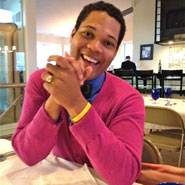
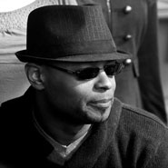

Teachers
-
Mike "The Girl" Legett
Mike is a passionate aficionado of jazz and blues dances, known all over the world for her friendliness, teaching skills, beautiful following, and expressive dancing. She brings both vibrant energy and technical precision to the classroom, and strives to make every social dance the best experience possible. Mike’s teaching history is extensive; having taught at a range of events from residencies to international workshops to private trainings, she brings preparation and flexibility to every class. A typical class could involve students morphing into robot penguins or seaweed, standing on one foot with their eyes closed, or analyzing chord changes- all in the pursuit of better dancing. Regardless of the material, her classes always include a mix of abstract and concrete topics, plenty of levity, and challenging homework to help students improve long after class has ended.
-
Julie Brown
Julie’s expressive dancing and joyful, playful connection are known throughout the country. With a background in performance and solo dance, she is best known for her solo blues, artistic choreography, and seamlessly integrating following with expression. As a teacher, Julie presents material with a caring and often light-hearted tone. She carefully crafts her classes and continuously tailors her material to fit the crowd at hand. Julie teaches regularly in her hometown of Boston, and has taught workshops everywhere from California to London. A hard-working competitor, Julie has also won many national competitions, including Enter the Blues 2013 Choreography Competition and Solo Competition, Mile High Blues 2012 Strictly and Jack and Jill, Enter the Blues 2012 Strictly and Choreography Competition, Emerald City Blues 2011 Strictly and Solo Cuttin, and many more.
-
Ria Debiase
Ria DeBiase, hailing from Sacramento, has been dancing and teaching Lindy Hop for over ten years, both in the USA and worldwide. She has also studied Historical Jazz, Ballet, Gymnastics, and Hip Hop. Her dancing style is energetic and musical, passionate and playful. Ria has been competing and performing since 1998. In Spring/Summer of 2003, Ria toured Canada and the USA with the Harlem Hot Shots. Over the last couple years alone, she has won competitions at the US Open, Ultimate Lindy Hop Showdown, National Jitterbug Championships, and the World Lindy Hop Championships. Despite a healthy competitive attitude, Ria loves lindy hop in its natural habitat, the social dance floor. "A great teacher is one who realizes that he himself is also a student and whose goal is not to dictate the answers, but to stimulate his student's creativity enough so that they go out and find the answers themselves." -Herbie Hancock
-

Javier Johnson
Javier is a rocket scientist by trade, and he brings a powerful analytical sense which joins the mechanics of dance and the soul of expression. He is well versed in all the swing dances, but specializes in Balboa and soul. As an international swing dance instructor, he's traveled around the world sharing his joy of teaching and his passion for jazz dances. He was the founding member of Lindy Circle (now Hartford Underground) back in 2007. He wanted to create a space where folks could get down and have some serious fun.
-

Damon Stone
Damon has been dancing his entire life, starting with vernacular Jazz/Blues first taught to him at the tender age of six by his grandmother. After nearly a decade of learning at the heels of his elders, he went on and eventually studied a score of different dance forms until coming full circle in 1995 to focus primarily on the history and styles of Swing and Blues as his family danced them with a special focus on the Southern styles from the Mississippi Delta region. He has studied the development of vernacular African-American dance across the United States learning from a number of the original dancers. He is largely regarded as one of the foremost authorities on Blues idiom dance, a long time board member of the Northern California Lindy Society, member of the California Historical Jazz Dance Foundation, and has been interviewed as a dance historian in documentary and for radio. Damon has been a featured instructor at camps, festivals, and workshops across five continents.